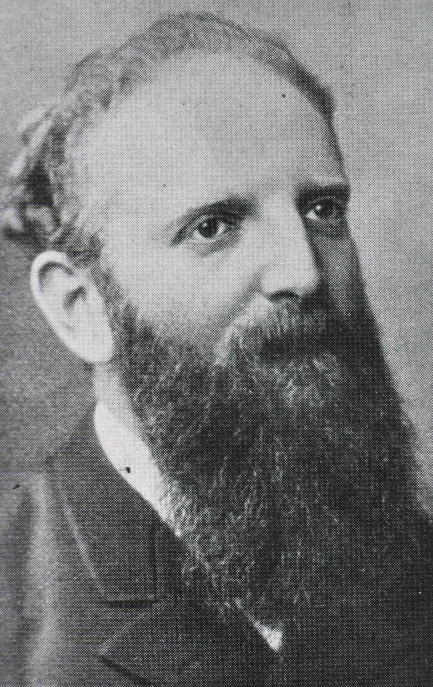
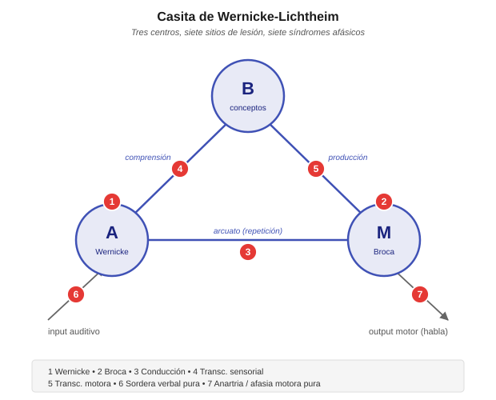

Triángulo (casita) de Wernicke-Lichtheim¶
El diagrama de Wernicke-Lichtheim —también llamado casita de Lichtheim, triángulo o house diagram— es el modelo fundacional de la aphasiology clásica. Propuesto entre 1874 y 1885, es el primer intento serio de explicar sistemáticamente cómo distintos sitios de lesión producen distintos síndromes afásicos. Casi 150 años después, sigue siendo el esqueleto de la clasificación clínica de las afasias que se enseña en neurología, fonoaudiología y neuropsicología, aunque sus predicciones y su ontología teórica hayan sido fuertemente revisadas.
Genealogía histórica¶
Tres papers seminales entre 1861 y 1885 fundaron la aphasiology moderna. Broca y Wernicke son alemán y francés respectivamente; Lichtheim es alemán:

(1824-1880)

(1848-1905)

(1845-1928)
- Paul Broca (1861) describe el caso "Tan" (Leborgne). Identifica una lesión en la tercera circunvolución frontal izquierda asociada a la pérdida de producción del habla con comprensión relativamente preservada. Nace el concepto de localización cerebral del lenguaje y de "área de Broca".
- Carl Wernicke (1874) Der aphasische Symptomencomplex. Describe un segundo tipo de afasia: comprensión alterada, producción fluente pero llena de errores (parafasias), asociada a lesión temporal posterior izquierda (área de Wernicke). Postula un tercer tipo predicho: afasia de conducción, por lesión en el haz de fibras que conecta ambas áreas (arcuato). El paper es teórico + clínico: no solo describe, predice.
- Ludwig Lichtheim (1885) On aphasia (Brain, 7:433-484). Extiende el modelo de Wernicke agregando un tercer centro (B) de "conceptos" y sistematiza las conexiones. El diagrama resultante — la "casita" — predice siete tipos distintos de afasia a partir del sitio de lesión.
El modelo Wernicke-Lichtheim es el primer modelo predictivo en neuropsicología: partiendo de una arquitectura teórica, se derivan síndromes que después se van encontrando (o no) en la clínica.
El diagrama¶
Tres centros y sus interconexiones:
- A — centro de las imágenes auditivas de la palabra (Wernicke, temporal posterior izquierdo).
- M — centro de las imágenes motoras de la palabra (Broca, frontal inferior izquierdo).
- B — centro de los conceptos (más difuso, no localizado en un solo punto — corteza asociativa).
Y tres tipos de vías:
- A ↔ M — el haz arcuato (fascículo arqueado). Permite la repetición directa (oír → repetir) sin pasar por el significado.
- A ↔ B — comprensión (oír → entender).
- B ↔ M — producción voluntaria (querer decir algo → producirlo).
Más las conexiones con periferia:
- Input auditivo → A (oído → representación acústica de palabra).
- M → output motor (representación motora → articulación).

Las siete afasias predichas por el modelo¶
Para cada síndrome: qué está preservado (columna verde) y qué está alterado (columna roja). El patrón sistemático es la firma de cada tipo.
1. Afasia de Wernicke (lesión en A)¶
- Producción: fluente pero llena de parafasias (fonémicas y semánticas), a veces jergafasia.
- Comprensión: severamente alterada — no puede acceder a las representaciones auditivas de las palabras.
- Repetición: alterada.
- Explicación del modelo: se destruyen las imágenes auditivas de las palabras, por lo que ni la comprensión (A→B) ni la repetición (A→M) funcionan.
2. Afasia de Broca (lesión en M)¶
- Producción: no fluente, esfuerzo articulatorio, agramática, telegráfica.
- Comprensión: relativamente preservada — al menos para material simple.
- Repetición: alterada.
- Explicación del modelo: se destruyen las imágenes motoras de las palabras. Como A y B están intactos, se puede entender pero no se puede producir. La comprensión "relativamente preservada" fue cuestionada después — hay déficits sintácticos también (ver agrammatismo).
3. Afasia de conducción (lesión en la vía A-M — arcuato)¶
- Producción: fluente, con parafasias fonémicas frecuentes especialmente al intentar repetir.
- Comprensión: preservada (A y B intactos, camino A→B funciona).
- Repetición: severamente alterada — no puede pasar directamente de oír a producir sin pasar por el concepto.
- Explicación: el paciente entiende y puede producir, pero la vía directa "input auditivo → output motor" está rota.
Nota histórica: este síndrome fue predicho por Wernicke antes de haberse observado clínicamente. Su descripción posterior en pacientes fue una validación fuerte del enfoque teórico.
4. Afasia transcortical sensorial (lesión en la vía A-B)¶
- Producción: fluente, con parafasias.
- Comprensión: muy alterada — las palabras entran a A pero no llegan al centro conceptual.
- Repetición: preservada — el camino A→M sigue funcionando.
- Explicación: puede oír y repetir palabras sin entenderlas. Fenómeno clínico llamativo: ecolalia (repite frases del examinador sin comprenderlas).
5. Afasia transcortical motora (lesión en la vía B-M)¶
- Producción: muy reducida — apatía verbal, iniciación difícil, respuestas muy breves.
- Comprensión: preservada.
- Repetición: preservada.
- Explicación: puede entender y repetir, pero no puede iniciar producción voluntaria desde el concepto. Ideas para decir + capacidad motora intactas, pero la vía que las conecta está rota.
6. Sordera verbal pura (lesión en el input auditivo → A)¶
- Producción: preservada.
- Comprensión: alterada solo para material verbal auditivo — puede leer, escribir, entender gestos.
- Repetición: alterada por vía auditiva; preservada por lectura.
- Explicación: la información acústica no llega al centro A, pero A mismo está intacto. Es una desconexión aferente.
7. Anartria / afasia motora pura (lesión en el output M → articulación)¶
- Producción: alterada — problemas puros de programación motora del habla.
- Comprensión: preservada.
- Repetición: alterada (por output).
- Explicación: M está intacto pero desconectado del sistema motor articulatorio. Es más un déficit de salida que del lenguaje propiamente dicho.
Bonus: afasia mixta transcortical (lesión conjunta 4 + 5)¶
Si se destruyen las dos vías B-A y B-M (dejando A, M y su conexión intactos), el paciente repite pero no comprende ni produce voluntariamente. Es el llamado síndrome de aislamiento del área del lenguaje (Geschwind et al. 1968), descrito en pacientes con hipoxia severa que dañó los bordes de la zona perisilviana pero respetó el núcleo.
Por qué el modelo fue revolucionario¶
Tres aportes teóricos que hacen a Wernicke-Lichtheim un modelo bisagra:
-
Localización específica de funciones: no todo el cerebro hace todo. Hay centros con roles funcionales distintos. Esto era controversial en 1874 (Flourens había defendido lo contrario).
-
Desconexión como mecanismo de déficit: no todos los síndromes vienen de destruir un centro; algunos vienen de cortar la conexión entre centros preservados. La afasia de conducción es el ejemplo canónico. Esto anticipa el enfoque de "neurología conductual" de Geschwind (1965) "Disconnexion syndromes in animals and man".
-
Poder predictivo: el modelo no solo describe lo observado, predice síndromes que después se buscan y encuentran. Es el rasgo que distingue una teoría científica de una taxonomía descriptiva.
Críticas y revisiones¶
La crítica cognitiva (Marshall & Newcombe 1973; Caramazza 1984; Ellis & Young 1988)¶
El modelo Wernicke-Lichtheim opera en un nivel demasiado grueso. Habla de "imágenes auditivas de palabras" y "imágenes motoras de palabras" como si fueran unidades simples. La neuropsicología cognitiva de los 80s mostró que dentro de "A" y "M" hay múltiples módulos disociables:
- Léxico input auditivo vs. léxico input visual (leer vs. oír son distintos).
- Léxico output fonológico vs. léxico output ortográfico (hablar vs. escribir son distintos).
- Sistema semántico único vs. múltiples sistemas semánticos (¿una sola B, o varias según modalidad?).
Los modelos cognitivos posteriores (Ellis & Young 1988; Patterson & Shewell 1987) proponen arquitecturas con 15-20 módulos, no 3.
La crítica localizacionista (Mesulam 1990; Hickok & Poeppel 2007)¶
La neuroimagen moderna mostró que el "área de Wernicke" no es un solo lugar, y que la comprensión y producción del lenguaje reclutan redes distribuidas, no puntos discretos. El modelo dual-stream de Hickok & Poeppel (2007) propone:
- Vía ventral (temporal): sonido → significado (comprensión).
- Vía dorsal (parieto-frontal): sonido → articulación (repetición, aprendizaje fonológico).
Es una actualización estructural del modelo Wernicke-Lichtheim con neuroanatomía contemporánea: dos vías en lugar de una sola conexión, redes distribuidas en lugar de puntos, pero mantiene la lógica de que hay especialización funcional y desconexiones.
Los síndromes clásicos no son tan puros¶
Al aplicar test cognitivos finos, los pacientes reales rara vez encajan limpiamente en las 7 categorías. Los perfiles son mixtos, hay variabilidad individual grande, y la clasificación categorial ha sido reemplazada en investigación por caracterización de déficits específicos (por módulo, no por síndrome). Sin embargo, en la práctica clínica los rótulos clásicos siguen siendo útiles como primera aproximación.
Legado y lo que quedó en pie¶
A pesar de las críticas, varios aportes del modelo persisten:
- La clasificación clínica (Wernicke, Broca, conducción, transcortical, global) sigue siendo el vocabulario estándar en neurología, fonoaudiología y neuropsicología clínica.
- La lógica de "predecir síndromes a partir de arquitectura teórica" es el método de la neuropsicología cognitiva contemporánea.
- El énfasis en las desconexiones anticipa la neurociencia de redes moderna.
- La distinción entre repetición y comprensión como funciones disociables sigue siendo diagnósticamente útil (una tarea de repetición sin comprensión es la firma clínica de afasia de conducción).
- El agramatismo — luego caracterizado con detalle por Grodzinsky, Friedmann, Bastiaanse, Druks — es la profundización del cuadro que Broca observó en producción y que la casita explica pobremente en comprensión.
Conexiones en este sitio¶
- Mecanismos de recuperación post-lesión — cómo el cerebro se reorganiza después de las lesiones que la casita categoriza.
- Modelos basados en memoria — ACT-R / Lewis & Vasishth como marco moderno para entender déficits sintácticos en afasia agramática (Caplan, Friedmann & Gvion).
- Modelos lexicalistas / conexionistas — la alternativa distribuida a la localización estricta del modelo clásico.
- Agreement attraction — errores de concordancia en afasia agramática, un caso donde el modelo Wernicke-Lichtheim no tiene mecanismo pero los modelos cognitivos sí.
Referencias clave¶
- Broca, P. (1861) "Remarques sur le siège de la faculté du langage articulé, suivies d'une observation d'aphémie" Bulletin de la Société d'Anatomie de Paris 6:330-357. El caso Leborgne / Tan.
- Wernicke, C. (1874) Der aphasische Symptomencomplex: Eine psychologische Studie auf anatomischer Basis. Breslau: Cohn & Weigert. El modelo original con la predicción de la afasia de conducción.
- Lichtheim, L. (1885) "On aphasia" Brain 7:433-484. La casita con los siete tipos de afasia sistematizados.
- Geschwind, N. (1965) "Disconnexion syndromes in animals and man" Brain 88:237-294, 585-644. Actualización clásica del enfoque de desconexión.
- Geschwind, N., Quadfasel, F. A. & Segarra, J. M. (1968) "Isolation of the speech area" Neuropsychologia 6:327-340. La afasia mixta transcortical.
- Marshall, J. C. & Newcombe, F. (1973) "Patterns of paralexia" Journal of Psycholinguistic Research 2:175-199. Inicio de la crítica cognitiva.
- Caramazza, A. (1984) "The logic of neuropsychological research and the problem of patient classification in aphasia" Brain and Language 21:9-20. La crítica cognitiva sistematizada.
- Ellis, A. W. & Young, A. W. (1988) Human Cognitive Neuropsychology. Hove: Lawrence Erlbaum. Los modelos cognitivos con 15-20 módulos.
- Mesulam, M. M. (1990) "Large-scale neurocognitive networks and distributed processing for attention, language, and memory" Annals of Neurology 28:597-613. La crítica de redes distribuidas.
- Hickok, G. & Poeppel, D. (2007) "The cortical organization of speech processing" Nature Reviews Neuroscience 8:393-402. Modelo dual-stream — actualización moderna del Wernicke-Lichtheim.
- Cuetos, F. (2012) Neurociencia del Lenguaje. Bases neurológicas e implicancias clínicas. Madrid: Panamericana. Manual de referencia en español.
- González Lázaro, P. & González Ortuño, B. (2012) Afasia: De la teoría a la práctica. México: Panamericana. Cubre casita + clasificación clínica.
- Ardila, A. (2005) Las Afasias. Universidad de Guadalajara. Libre en aphasia.org/libroespanol.php.